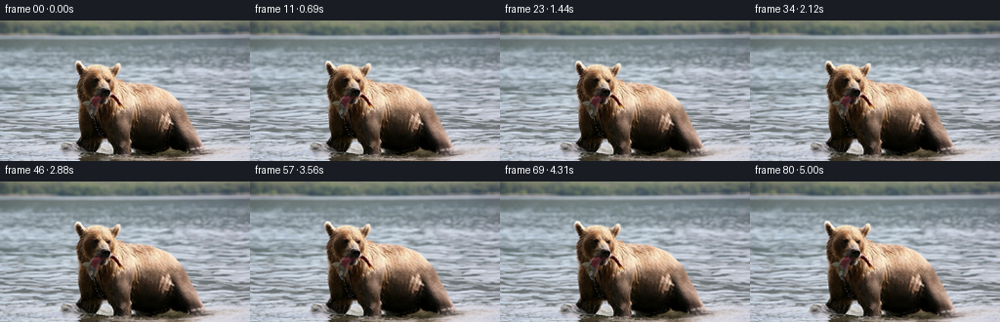
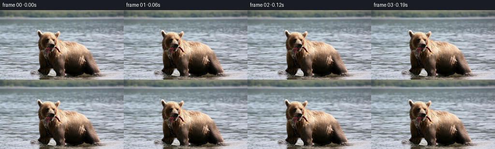

CODING AGENTS AS PIXEL WORLD MODELS
traex/DeepSeek-V4.1-Flash · 0872_s4
点击播放 · 原生 RGB 像素
逐轮保存的候选
回放视频、检查图与代码变化。
每份候选均可单独播放。实际图片检查记录在下方工具轨迹中。
候选 01播放与检查图
点击播放 · 原生 RGB 像素

展开代码变化
--- 上一保存版本
+++ 本次保存版本
@@ -0,0 +1,217 @@
+from pathlib import Path
+
+import cv2
+import imageio.v2 as imageio
+import numpy as np
+from PIL import Image
+
+import artifact_io
+
+
+ROOT = Path(__file__).resolve().parent
+N_FRAMES = 81
+FPS = 16
+
+
+def smoothstep(x):
+ x = np.clip(x, 0.0, 1.0)
+ return x * x * (3.0 - 2.0 * x)
+
+
+def smooth_envelope(values, low, high):
+ return smoothstep((values - low) / (high - low))
+
+
+def subject_mask(image):
+ """Approximate the warm, dark bear/fish mass against the cool water."""
+ rgb = image.astype(np.float32)
+ red, green, blue = rgb.transpose(2, 0, 1)
+ luminance = 0.299 * red + 0.587 * green + 0.114 * blue
+ yy, xx = np.mgrid[: image.shape[0], : image.shape[1]]
+
+ warm = (red - blue > 5.0) & (red > 15.0)
+ dark = luminance < 108.0
+ candidate = (warm | dark) & (xx > 58) & (yy > 35)
+ candidate = candidate.astype(np.uint8)
+ candidate = cv2.morphologyEx(
+ candidate, cv2.MORPH_CLOSE, np.ones((5, 5), np.uint8)
+ )
+ candidate = cv2.morphologyEx(
+ candidate, cv2.MORPH_OPEN, np.ones((3, 3), np.uint8)
+ )
+
+ count, labels, stats, _ = cv2.connectedComponentsWithStats(candidate, 8)
+ if count <= 1:
+ return np.zeros(image.shape[:2], np.float32)
+ largest = 1 + int(np.argmax(stats[1:, cv2.CC_STAT_AREA]))
+ mask = (labels == largest).astype(np.uint8)
+
+ # Fill small holes inside the animal without expanding the silhouette.
+ filled = mask.copy()
+ contours, _ = cv2.findContours(mask, cv2.RETR_EXTERNAL, cv2.CHAIN_APPROX_SIMPLE)
+ if contours:
+ cv2.drawContours(filled, contours, -1, 1, thickness=cv2.FILLED)
+ return filled.astype(np.float32)
+
+
+def feather(mask, sigma):
+ return cv2.GaussianBlur(mask.astype(np.float32), (0, 0), sigma)
+
+
+def remap(image, map_x, map_y):
+ return cv2.remap(
+ image,
+ map_x.astype(np.float32),
+ map_y.astype(np.float32),
+ interpolation=cv2.INTER_CUBIC,
+ borderMode=cv2.BORDER_REFLECT_101,
+ )
+
+
+def animate_water(image, seconds, duration, subject):
+ height, width = image.shape[:2]
+ yy, xx = np.mgrid[:height, :width].astype(np.float32)
+ ramp = smoothstep(seconds / 0.55)
+
+ depth = smooth_envelope(yy, 17.0, 48.0)
+ dx = ramp * depth * (
+ 0.72 * np.sin(2.0 * np.pi * (yy / 18.0 + 0.19 * seconds))
+ + 0.28 * np.sin(2.0 * np.pi * (xx / 47.0 - 0.12 * seconds))
+ )
+ dy = ramp * depth * (
+ 0.42 * np.sin(2.0 * np.pi * (xx / 39.0 - 0.15 * seconds))
+ + 0.18 * np.sin(2.0 * np.pi * (yy / 25.0 + 0.11 * seconds))
+ )
+
+ # Keep the animal's silhouette from sliding with the surrounding water.
+ clearance = feather(subject, 3.2)
+ water_weight = 1.0 - np.clip(clearance * 1.35, 0.0, 1.0)
+ dx *= water_weight
+ dy *= water_weight
+
+ warped = remap(image, xx + dx, yy + dy)
+ return warped
+
+
+def animate_fish(image, seconds, duration, subject):
+ """Flop the tail at the right end of the fish while holding its mouth still."""
+ height, width = image.shape[:2]
+ yy, xx = np.mgrid[:height, :width].astype(np.float32)
+
+ # The fish is held near the left/center and extends to the right edge.
+ reach = smooth_envelope(xx, 143.0, 224.0)
+ vertical_span = smooth_envelope(yy, 49.0, 62.0)
+ tail_region = feather(subject, 2.1) * reach * vertical_span
+
+ # Start gently, then let the tail make two small, irregular strokes.
+ entrance = smoothstep(seconds / 0.65)
+ pulse = 0.72 + 0.28 * np.sin(2.0 * np.pi * 0.23 * seconds + 0.8)
+ phase = 2.0 * np.pi * 1.18 * seconds + 0.45 * np.sin(
+ 2.0 * np.pi * 0.31 * seconds
+ )
+ amplitude = 2.5 * entrance * pulse
+
+ dy = amplitude * tail_region * np.sin(phase)
+ dx = 0.38 * amplitude * tail_region * np.cos(phase)
+
+ # A tiny body roll near the tail root makes the stroke feel connected.
+ root = np.exp(
+ -(((xx - 165.0) / 26.0) ** 2 + ((yy - 100.0) / 37.0) ** 2)
+ )
+ dx += 0.34 * entrance * root * np.sin(phase + 0.7)
+ dy += 0.26 * entrance * root * np.cos(phase + 0.7)
+
+ warped = remap(image, xx + dx, yy + dy)
+ alpha = np.clip(tail_region + 0.35 * root, 0.0, 1.0)[..., None]
+ return image * (1.0 - alpha) + warped * alpha
+
+
+def animate_body(image, seconds, subject):
+ """Small breathing motion, anchored by the surrounding silhouette."""
+ height, width = image.shape[:2]
+ yy, xx = np.mgrid[:height, :width].astype(np.float32)
+ breath = np.sin(2.0 * np.pi * 0.36 * seconds)
+ center = np.exp(
+ -(((xx - 133.0) / 48.0) ** 2 + ((yy - 104.0) / 44.0) ** 2)
+ )
+ weight = feather(subject, 2.8) * center
+ dx = 0.30 * breath * weight
+ dy = 0.22 * np.sin(2.0 * np.pi * 0.36 * seconds + 0.9) * weight
+ warped = remap(image, xx + dx, yy + dy)
+ alpha = np.clip(weight, 0.0, 0.65)[..., None]
+ return image * (1.0 - alpha) + warped * alpha
+
+
+def apply_camera(image, seconds, duration):
+ """Slow push-in and a restrained handheld drift."""
+ height, width = image.shape[:2]
+ t = np.clip(seconds / duration, 0.0, 1.0)
+ eased = 0.5 - 0.5 * np.cos(np.pi * t)
+ scale = 1.0 + 0.014 * eased
+ shift_x = 0.34 * np.sin(2.0 * np.pi * 0.095 * seconds) * eased
+ shift_y = 0.18 * np.sin(2.0 * np.pi * 0.071 * seconds + 0.8) * eased
+ matrix = np.array(
+ [
+ [scale, 0.0, (1.0 - scale) * width * 0.5 + shift_x],
+ [0.0, scale, (1.0 - scale) * height * 0.5 + shift_y],
+ ],
+ dtype=np.float32,
+ )
+ return cv2.warpAffine(
+ image,
+ matrix,
+ (width, height),
+ flags=cv2.INTER_CUBIC,
+ borderMode=cv2.BORDER_REFLECT_101,
+ )
+
+
+def build_frames(source):
+ source_f = source.astype(np.float32)
+ subject = subject_mask(source)
+ duration = (N_FRAMES - 1) / FPS
+ frames = []
+
+ for index in range(N_FRAMES):
+ if index == 0:
+ frames.append(source.copy())
+ continue
+
+ seconds = index / FPS
+ frame = animate_water(source_f, seconds, duration, subject)
+ frame = animate_fish(frame, seconds, duration, subject)
+ frame = animate_body(frame, seconds, subject)
+ frame = apply_camera(frame, seconds, duration)
+
+ # Preserve the source's tonal range and avoid transient color drift.
+ frame = np.clip(frame, 0.0, 255.0).astype(np.uint8)
+ frames.append(frame)
+
+ return np.stack(frames)
+
+
+def save_mp4(frames, path):
+ imageio.mimsave(
+ path,
+ frames,
+ fps=FPS,
+ codec="libx264",
+ quality=8,
+ macro_block_size=1,
+ ffmpeg_log_level="error",
+ )
+
+
+def main():
+ source = np.asarray(Image.open(ROOT / "first_frame.png").convert("RGB"))
+ frames = build_frames(source)
+ assert frames.shape == (81, 144, 256, 3)
+ assert frames.dtype == np.uint8
+ assert np.array_equal(frames[0], source)
+
+ artifact_io.save(frames, ROOT)
+ save_mp4(frames, ROOT / "video.mp4")
+
+
+if __name__ == "__main__":
+ main()
候选 02播放与检查图
点击播放 · 原生 RGB 像素


展开代码变化
--- 上一保存版本
+++ 本次保存版本
@@ -45,6 +45,23 @@
return np.zeros(image.shape[:2], np.float32)
largest = 1 + int(np.argmax(stats[1:, cv2.CC_STAT_AREA]))
mask = (labels == largest).astype(np.uint8)
+
+ # The pale fish overlaps the bear's mouth and is not part of the warm
+ # connected component. Add only its visible high-contrast interior.
+ fish = (
+ (xx >= 142)
+ & (xx <= 223)
+ & (yy >= 57)
+ & (yy <= 112)
+ & ((red - blue > 9.0) | (luminance < 93.0))
+ )
+ fish = cv2.morphologyEx(
+ fish.astype(np.uint8), cv2.MORPH_CLOSE, np.ones((5, 5), np.uint8)
+ )
+ count_fish, fish_labels, fish_stats, _ = cv2.connectedComponentsWithStats(fish, 8)
+ if count_fish > 1:
+ fish_component = 1 + int(np.argmax(fish_stats[1:, cv2.CC_STAT_AREA]))
+ mask |= (fish_labels == fish_component).astype(np.uint8)
# Fill small holes inside the animal without expanding the silhouette.
filled = mask.copy()
@@ -99,8 +116,10 @@
yy, xx = np.mgrid[:height, :width].astype(np.float32)
# The fish is held near the left/center and extends to the right edge.
- reach = smooth_envelope(xx, 143.0, 224.0)
- vertical_span = smooth_envelope(yy, 49.0, 62.0)
+ reach = smooth_envelope(xx, 138.0, 214.0)
+ vertical_span = smooth_envelope(yy, 55.0, 67.0) * (
+ 1.0 - smooth_envelope(yy, 108.0, 121.0)
+ )
tail_region = feather(subject, 2.1) * reach * vertical_span
# Start gently, then let the tail make two small, irregular strokes.
@@ -109,7 +128,7 @@
phase = 2.0 * np.pi * 1.18 * seconds + 0.45 * np.sin(
2.0 * np.pi * 0.31 * seconds
)
- amplitude = 2.5 * entrance * pulse
+ amplitude = 2.1 * entrance * pulse
dy = amplitude * tail_region * np.sin(phase)
dx = 0.38 * amplitude * tail_region * np.cos(phase)
候选 03播放与检查图
可观测工具轨迹
实际执行的命令与返回图片。
命令 1exit 0
/bin/bash -c "sed -n '1,240p' prompt.txt"
命令 2exit 0
/bin/bash -c "sed -n '1,280p' GENERATION_RULES.md"
命令 3exit 0
/bin/bash -c 'file first_frame.png; identify first_frame.png 2>/dev/null || true; ffprobe -v error -show_entries stream=width,height,pix_fmt -of default=nw=1 first_frame.png 2>/dev/null || true; git status --short'
命令 4exit 0
/bin/bash -c "printf '%s\\n' '--- files ---'; rg --files -g '"'!*.pyc'"' | sed -n '1,200p'; printf '%s\\n' '--- tools ---'; command -v ffmpeg; command -v ffprobe; command -v python3; python3 - <<'PY'
mods=['PIL','cv2','numpy','imageio','torch','scipy']
for m in mods:
try:
mod=__import__(m)
print(m, getattr(mod,'__version__','ok'))
except Exception as e:
print(m, 'MISSING', type(e).__name__)
PY"命令 5exit 0
/bin/bash -c "sed -n '1,240p' task_spec.json; sed -n '1,260p' artifact_io.py"
命令 6exit 0
/bin/bash -c "python3 - <<'PY'
from PIL import Image
import numpy as np
im=Image.open('first_frame.png')
print(im.mode, im.size)
a=np.asarray(im.convert('RGB'))
print('shape',a.shape,'dtype',a.dtype,'minmax',a.min(),a.max(),'mean',a.mean((0,1)))
# 12x8 block luminance/color summary
h,w=a.shape[:2]
for by in range(8):
row=[]
for bx in range(12):
p=a[by*h//8:(by+1)*h//8,bx*w//12:(bx+1)*w//12]
row.append('%02x%02x%02x'%tuple(p.mean((0,1)).astype(int)))
print(' '.join(row))
# gradient saliency blocks
lum=a.astype(np.float32)@np.array([.299,.587,.114],np.float32)
gy,gx=np.gradient(lum)
mag=np.hypot(gx,gy)
for by in range(8):
vals=[]
for bx in range(12):
vals.append(int(mag[by*h//8:(by+1)*h//8,bx*w//12:(bx+1)*w//12].mean()))
print(' '.join(f'{v:3d}' for v in vals))
PY"命令 7exit 0
/bin/bash -c "python3 - <<'PY'
from PIL import Image, ImageFilter, ImageOps
import numpy as np
im=Image.open('first_frame.png').convert('RGB')
a=np.asarray(im)
# contrast-normalized luminance ascii, aspect corrected (2 chars per pixel vertically)
g=np.asarray(im.convert('L'),dtype=float)
lo,hi=np.percentile(g,[2,98]); q=np.clip((g-lo)/(hi-lo),0,1)
q=np.asarray(Image.fromarray((q*255).astype('uint8')).resize((128,72),Image.Resampling.BILINEAR))/255
chars='@%#*+=-:. '
for row in q:
print(''.join(chars[min(len(chars)-1,int(v*(len(chars)-1)))] for v in row))
PY"命令 8exit 0
/bin/bash -c "python3 - <<'PY'
import cv2, numpy as np
from PIL import Image
im=np.asarray(Image.open('first_frame.png').convert('RGB'))
hsv=cv2.cvtColor(im,cv2.COLOR_RGB2HSV)
# kmeans RGB
z=im.reshape(-1,3).astype(np.float32)
crit=(cv2.TERM_CRITERIA_EPS+cv2.TERM_CRITERIA_MAX_ITER,50,.2)
_,lab,cen=cv2.kmeans(z,12,None,crit,4,cv2.KMEANS_PP_CENTERS)
cen=cen.astype(int)
counts=np.bincount(lab.ravel(),minlength=12)
for i in np.argsort(-counts):
m=(lab.reshape(im.shape[:2])==i)
ys,xs=np.where(m)
print(i, counts[i], 'RGB',cen[i].tolist(),'box',xs.min(),ys.min(),xs.max(),ys.max(),'cent',round(xs.mean(),1),round(ys.mean(),1))
# dominant color category ascii every 4 px using nearest centers; map clusters to chars by luma
chars='ABCDEFGHIJKL'
print('cluster map:')
for y in range(0,144,4):
print(''.join(chars[lab.reshape(144,256)[y,x]] for x in range(0,256,2)))
PY"命令 9exit 0
/bin/bash -c "python3 - <<'PY'
from PIL import Image
import numpy as np
im=np.asarray(Image.open('first_frame.png').convert('RGB')).astype(np.int16)
r,g,b=im.transpose(2,0,1); v=im.max(2); mn=im.min(2); sat=v-mn; lum=im@np.array([.299,.587,.114])
# categorical map, 2x4 pixels
for y in range(0,144,2):
row=''
for x in range(0,256,2):
R,G,B=im[y:y+2,x:x+2].mean((0,1)); V=max(R,G,B); S=V-min(R,G,B); L=.299*R+.587*G+.114*B
if L<28: c='@'
elif R>B+22 and V>200: c='O' # cream/gold bright
elif R>B+20 and V>125: c='f' # fur brown
elif R>B+14 and V>65: c='b' # dark brown
elif B>=R+12 and V>165: c='~' # bright cool water
elif B>=R+5 and V>120: c='-' # water mid
elif V<70: c='#'
elif S<15 and L>175: c='.'
else: c=' '
row+=c
print(f'{y:03d} '+row)
PY"命令 10exit 0
/bin/bash -c "python3 - <<'PY'
import cv2,numpy as np
from PIL import Image
im=np.asarray(Image.open('first_frame.png').convert('RGB')).astype(np.float32)
r,g,b=im.transpose(2,0,1)
# metrics
for name,m in [
('warm', (r-b)>8),
('warm15',(r-b)>15),
('warm25',(r-b)>25),
('darkwarm',((r-b)>8)&(r<190)),
('fur',((r-b)>15)&(r>50)),
('fish',((r-b)>25)&(r>170)&(g>100)),
]:
u=(m.astype(np.uint8)*255)
n,labels,stats,cent=cv2.connectedComponentsWithStats(u,8)
comps=sorted(stats[1:].tolist(),key=lambda s:s[4],reverse=True)[:8]
print(name, 'pixels',m.sum(),'comps',comps)
PY"命令 11exit 0
/bin/bash -c "python3 - <<'PY'
from PIL import Image
import numpy as np
im=np.asarray(Image.open('first_frame.png').convert('RGB')).astype(float)
# Print horizontal/vertical luma profile and local variance, 2px samples around likely subject
L=im@np.array([.299,.587,.114])
print('vertical luminance profile by row')
for y in range(0,144,3):
print(f'{y:3d}', int(L[y].mean()), int(np.percentile(L[y],10)), int(np.percentile(L[y],90)))
print('horizontal luminance profile by col')
for x in range(0,256,4):
print(f'{x:3d}', int(L[:,x].mean()), int(np.percentile(L[:,x],10)), int(np.percentile(L[:,x],90)))
PY"命令 12exit 0
/bin/bash -c "python3 - <<'PY'
from PIL import Image
import numpy as np
im=np.asarray(Image.open('first_frame.png').convert('RGB'))
# RGB values at grid points in subject area, row-major
xs=[70,80,90,100,110,120,130,140,150,160,170,180,190,200,210,220]
ys=[35,45,55,65,75,85,95,105,115,125,135]
print(' '+' '.join(f'x{x:03d}' for x in xs))
for y in ys:
print(f'y{y:03d} '+' '.join('%02x%02x%02x'%tuple(im[y,x]) for x in xs))
PY"命令 13exit 0
/bin/bash -c "python3 - <<'PY'
from PIL import Image
im=Image.open('first_frame.png')
print(im.info)
print(im.getexif())
PY
python3 - <<'PY'
from PIL import Image
import numpy as np
im=np.asarray(Image.open('first_frame.png').convert('RGB')).astype(float)
L=im@np.array([.299,.587,.114])
# detailed luma ascii crop x=60..240 y=35..144, 1 char per 2x2 average, high contrast
chars=' .:-=+*#%@'
lo,hi=10,235
q=np.clip((L-lo)/(hi-lo),0,1)
for y in range(35,144,2):
row=''
for x in range(60,240,2):
v=q[y:y+2,x:x+2].mean()
row+=chars[min(9,int(v*10))]
print(f'{y:03d} {row}')
PY"命令 14exit 0
/bin/bash -c 'command -v chafa || true; command -v viu || true; command -v jp2 || true; command -v img2txt || true; command -v ffmpeg || true; command -v ffplay || true; command -v convert || true; command -v identify || true'
命令 15exit 0
/bin/bash -c "python3 - <<'PY'
import cv2, numpy as np
from PIL import Image
im=np.asarray(Image.open('first_frame.png').convert('RGB'))
hsv=cv2.cvtColor(im,cv2.COLOR_RGB2HSV)
# print color stats and quantiles
for name,x in [('R',im[:,:,0]),('G',im[:,:,1]),('B',im[:,:,2]),('H',hsv[:,:,0]),('S',hsv[:,:,1]),('V',hsv[:,:,2])]:
print(name, np.percentile(x,[0,1,5,10,25,50,75,90,95,99,100]).round(1).tolist())
# scanline transitions: color clusters by rows/cols
# Kmeans on pixels, report clusters with bbox and centroid and median
z=im.reshape(-1,3).astype(np.float32)
crit=(cv2.TERM_CRITERIA_EPS+cv2.TERM_CRITERIA_MAX_ITER,100,.2)
_, lab, cen = cv2.kmeans(z, 16, None, crit, 10, cv2.KMEANS_PP_CENTERS)
lab=lab.reshape(144,256); cen=cen.astype(int)
for i in range(16):
m=lab==i; ys,xs=np.where(m); p=im[m]
print(i,'n',m.sum(),'center',cen[i].tolist(),'median',np.median(p,0).astype(int).tolist(),'bbox',xs.min(),ys.min(),xs.max(),ys.max(),'centroid',xs.mean().round(1),ys.mean().round(1))
PY"命令 16exit 0
/bin/bash -c "python3 - <<'PY'
import numpy as np, cv2
from PIL import Image
im=np.asarray(Image.open('first_frame.png').convert('RGB'))
# make subject mask based on brown/black/cream areas, robustly close fill
r,g,b=im.transpose(2,0,1).astype(float)
brown=(r-b>7)&(g>0.65*r)&(r>18)
# restrict connected main body
u=(brown*255).astype(np.uint8)
u=cv2.morphologyEx(u,cv2.MORPH_CLOSE,np.ones((5,5),np.uint8))
u=cv2.morphologyEx(u,cv2.MORPH_OPEN,np.ones((3,3),np.uint8))
n,lab,stats,cent=cv2.connectedComponentsWithStats(u,8)
for i in range(1,n):
x,y,w,h,area=stats[i]
if area>100: print(i,stats[i].tolist(),cent[i])
# principal connected component then fill holes, bbox, contour extrema
idx=1+np.argmax(stats[1:,4]); mask=(lab==idx)
print('main',stats[idx].tolist())
# row x ranges for mask
for y in range(40,144,4):
xs=np.where(mask[y])[0]
if len(xs): print(y,xs.min(),xs.max(),len(xs))
# contour
cont,_=cv2.findContours(mask.astype(np.uint8),cv2.RETR_EXTERNAL,cv2.CHAIN_APPROX_SIMPLE)
c=max(cont,key=cv2.contourArea)
print('area',cv2.contourArea(c),'bbox',cv2.boundingRect(c),'approx',cv2.approxPolyDP(c,3,True).reshape(-1,2).tolist())
PY"命令 17exit 0
/bin/bash -c "python3 - <<'PY'
import numpy as np, cv2
from PIL import Image
im=np.asarray(Image.open('first_frame.png').convert('RGB'))
r,g,b=im.transpose(2,0,1).astype(float)
# grayscale gradient / dark mask crop
L=(.299*r+.587*g+.114*b)
for th in [40,60,80,100,120]:
m=(L<th).astype(np.uint8)*255
m[:35]=0
n,lab,stats,cent=cv2.connectedComponentsWithStats(m,8)
comps=sorted([(int(s[4]),s.tolist(),c.tolist()) for s,c in zip(stats[1:],cent[1:])], reverse=True)[:4]
print('th',th,comps)
# Save masks to temp for optional stats
Image.fromarray((((r-b>7)&(L<210))*255).astype(np.uint8)).save('.tmp/subject_mask.png')
PY"命令 18exit 0
/bin/bash -c "python3 - <<'PY'
import cv2,numpy as np
from PIL import Image
im=np.asarray(Image.open('first_frame.png').convert('RGB'))
r,g,b=im.transpose(2,0,1).astype(np.float32)
L=.299*r+.587*g+.114*b
# several masks, dump row bounds and area. Main body: warm+dark
warm=(r-b>6)&(r>16)
dark=L<105
mask=(warm|dark)&(np.indices(L.shape)[1]>55)&(np.indices(L.shape)[0]>35)
mask=cv2.morphologyEx(mask.astype(np.uint8),cv2.MORPH_CLOSE,np.ones((5,5),np.uint8))
n,lab,stats,cent=cv2.connectedComponentsWithStats(mask,8)
for i in range(1,n):
if stats[i,4]>30:
print(i,'area',stats[i,4],'bbox',stats[i,:4].tolist(),'cent',cent[i].round(1).tolist())
# contour shape of union warm and dark threshold lower
mask2=((warm & (L<190)) | (L<80))
mask2[:38]=0; mask2[:,:58]=0; mask2[:,235:]=0
mask2=cv2.morphologyEx(mask2.astype(np.uint8),cv2.MORPH_CLOSE,np.ones((7,7),np.uint8))
mask2=cv2.morphologyEx(mask2,cv2.MORPH_OPEN,np.ones((3,3),np.uint8))
n,lab,stats,cent=cv2.connectedComponentsWithStats(mask2,8)
i=1+np.argmax(stats[1:,4]); m=lab==i
print('union',stats[i].tolist(),cent[i])
for y in range(38,144,3):
xs=np.where(m[y])[0]
if len(xs):
# runs
runs=[]; st=xs[0]; prev=xs[0]
for x in xs[1:]:
if x>prev+1:runs.append((st,prev));st=x
prev=x
runs.append((st,prev))
print(y,runs)
PY"命令 19exit 0
/bin/bash -c "python3 - <<'PY'
import numpy as np, cv2
from PIL import Image
im=np.asarray(Image.open('first_frame.png').convert('RGB'))
r,g,b=im.transpose(2,0,1).astype(float); L=.299*r+.587*g+.114*b
Y,X=np.mgrid[:144,:256]
# candidate bear mask by polygon + intensity. polygon outline manually approximated from connected warm mass
poly=np.array([[77,44],[121,43],[121,59],[153,67],[178,80],[190,96],[200,118],[210,131],[228,135],[228,143],[80,143],[79,125],[81,100],[78,73],[77,55]],np.int32)
pm=np.zeros((144,256),np.uint8); cv2.fillPoly(pm,[poly],1)
# apply soft semantic based on warm/dark and edge, but preserve all inside; outside feather
warm=(r-b>4)&(r>12)
dark=L<115
candidate=(pm.astype(bool) & (warm|dark|(L<140)))
# hole filling close
m=cv2.morphologyEx(candidate.astype(np.uint8),cv2.MORPH_CLOSE,np.ones((7,7),np.uint8))
m=cv2.GaussianBlur(m.astype(np.float32),(0,0),2)
print('mask px',m.sum())
# create subject transparency test with outside background color from nearest source? save mask
Image.fromarray((np.clip(m,0,1)*255).astype(np.uint8)).save('.tmp/mask.png')
# optical flow diagnostic from slight transforms? first no
PY"命令 20exit 1
/bin/bash -c "python3 - <<'PY'
import cv2,numpy as np
from PIL import Image
im=np.asarray(Image.open('first_frame.png').convert('RGB'))
r,g,b=im.transpose(2,0,1).astype(float); L=.299*r+.587*g+.114*b
# edge strength crop ascii, 2x2 blocks
gx=cv2.Sobel(L,cv2.CV_32F,1,0,ksize=3); gy=cv2.Sobel(L,cv2.CV_32F,0,1,ksize=3); m=np.hypot(gx,gy)
for y in range(35,144,2):
row=''
for x in range(60,236,2):
v=m[y:y+2,x:x+2].mean()
row += ' ' if v<15 else '.' if v<30 else ':' if v<50 else '+' if v<80 else '*' if v<120 else '#' if v<170 else '@'
print(f'{y:03d} {row}')
PY"命令 21exit 0
/bin/bash -c "python3 - <<'PY'
import cv2,numpy as np
from PIL import Image
im=np.asarray(Image.open('first_frame.png').convert('RGB')).astype(np.float32)
L=(im@np.array([.299,.587,.114],np.float32)).astype(np.float32)
gx=cv2.Sobel(L,cv2.CV_32F,1,0,ksize=3); gy=cv2.Sobel(L,cv2.CV_32F,0,1,ksize=3); m=np.hypot(gx,gy)
for y in range(35,144,2):
row=''
for x in range(60,236,2):
v=m[y:y+2,x:x+2].mean()
row += ' ' if v<15 else '.' if v<30 else ':' if v<50 else '+' if v<80 else '*' if v<120 else '#' if v<170 else '@'
print(f'{y:03d} {row}')
PY"命令 22exit 0
/bin/bash -c "python3 - <<'PY'
try:
import imageio_ffmpeg
print('imageio_ffmpeg',imageio_ffmpeg.get_ffmpeg_exe())
except Exception as e: print('no imageio ffmpeg',e)
PY"命令 23exit 0
/bin/bash -c 'python3 generate.py'
命令 24exit 0
/bin/bash -c "python3 - <<'PY'
from pathlib import Path
from PIL import Image
import numpy as np, cv2, json
root=Path('.')
frames=np.stack([np.asarray(Image.open(p).convert('RGB')) for p in sorted((root/'frames').glob('*.png'))])
print('shape',frames.shape,'dtype',frames.dtype)
print('first identical',np.array_equal(frames[0],np.asarray(Image.open('first_frame.png').convert('RGB'))))
d=np.abs(frames.astype(np.int16)-frames[0].astype(np.int16))
for i in [1,2,4,8,16,24,32,40,48,56,64,72,80]:
print(i,'mae',round(float(d[i].mean()),3),'max',int(d[i].max()),'p99',int(np.percentile(d[i],99)),'changed',round(float((d[i].max(2)>3).mean()),4))
# temporal differences
for i in [1,2,8,16,24,32,40,48,56,64,72,80]:
dt=np.abs(frames[i].astype(np.int16)-frames[i-1].astype(np.int16))
print('dt',i,round(float(dt.mean()),3),int(dt.max()),round(float((dt.max(2)>3).mean()),4))
# black / border stats
for i in [0,1,20,40,80]:
f=frames[i]
print('edges',i,'top',f[0].mean(),'bottom',f[-1].mean(),'left',f[:,0].mean(),'right',f[:,-1].mean())
print('mp4',Path('video.mp4').stat().st_size)
print('inspection',Image.open('inspection.png').size)
PY"命令 25exit 1
/bin/bash -c "python3 - <<'PY'
from PIL import Image
import numpy as np
# render source and key candidate frame side by side, with difference heatmaps, at 2x for terminal-free numeric inspection
frames=[np.asarray(Image.open(f'frames/{i:02d}.png').convert('RGB')) for i in [0,8,16,24,32,40,48,56,64,72,80]]
src=frames[0]
out=[]
for f in frames:
d=np.abs(f.astype(np.int16)-src.astype(np.int16)).max(2)
hm=np.zeros_like(f); hm[...,0]=np.clip(d*4,0,255); hm[...,1]=np.clip((d-32)*3,0,255)
out.append(f); out.append(hm)
sheet=np.concatenate([np.concatenate(out[i:i+4],axis=1) for i in range(0,len(out),4)],axis=0)
Image.fromarray(sheet).resize((sheet.shape[1]*2,sheet.shape[0]*2),Image.Resampling.NEAREST).save('.tmp/candidate_diff.png')
# Motion magnitude by 8x8 blocks, final vs first
for idx,f in enumerate(frames):
d=np.abs(f.astype(np.int16)-src.astype(np.int16)).max(2)
print('frame',idx*8,'mean',d.mean().round(2),'p95',np.percentile(d,95).round(1),'max',d.max())
# edge coordinate extents where large diff
for idx,f in enumerate([frames[2],frames[4],frames[8],frames[10]]):
d=np.abs(f.astype(np.int16)-src.astype(np.int16)).max(2)
print('loc',idx,d.argmax()//256,d.argmax()%256)
PY"命令 26exit 0
/bin/bash -c "python3 - <<'PY'
from PIL import Image
import numpy as np
idx=[0,8,16,24,32,40,48,56,64,72,80]
frames=[np.asarray(Image.open(f'frames/{i:02d}.png').convert('RGB')) for i in idx]
src=frames[0]
out=[]
for f in frames:
d=np.abs(f.astype(np.int16)-src.astype(np.int16)).max(2)
hm=np.zeros_like(f); hm[...,0]=np.clip(d*4,0,255); hm[...,1]=np.clip((d-32)*3,0,255)
out.append(f); out.append(hm)
rows=[]
for i in range(0,len(out),4):
row=out[i:i+4]
while len(row)<4: row.append(np.zeros_like(src))
rows.append(np.concatenate(row,axis=1))
sheet=np.concatenate(rows,axis=0)
Image.fromarray(sheet).resize((sheet.shape[1]*2,sheet.shape[0]*2),Image.Resampling.NEAREST).save('.tmp/candidate_diff.png')
for idx,f in enumerate(frames):
d=np.abs(f.astype(np.int16)-src.astype(np.int16)).max(2)
print('frame',idx*8,'mean',d.mean().round(2),'p95',np.percentile(d,95).round(1),'max',d.max())
for n,f in enumerate(frames):
d=np.abs(f.astype(np.int16)-src.astype(np.int16)).max(2)
print('loc',n,'y',int(d.argmax()//256),'x',int(d.argmax()%256))
PY"命令 27exit 0
/bin/bash -c "python3 - <<'PY'
import numpy as np, cv2
from PIL import Image
src=np.asarray(Image.open('first_frame.png').convert('RGB')).astype(np.float32)
r,g,b=src.transpose(2,0,1); L=.299*r+.587*g+.114*b
Y,X=np.mgrid[:144,:256]
warm=(r-b>5)&(r>15); dark=L<108
c=((warm|dark)&(X>58)&(Y>35)).astype(np.uint8)
c=cv2.morphologyEx(c,cv2.MORPH_CLOSE,np.ones((5,5),np.uint8)); c=cv2.morphologyEx(c,cv2.MORPH_OPEN,np.ones((3,3),np.uint8))
n,lab,stats,cent=cv2.connectedComponentsWithStats(c,8); i=1+np.argmax(stats[1:,4]); m=(lab==i).astype(np.uint8)
cont,_=cv2.findContours(m,cv2.RETR_EXTERNAL,cv2.CHAIN_APPROX_SIMPLE); fill=np.zeros_like(m)
cv2.drawContours(fill,cont,-1,1,cv2.FILLED)
print('mask area',fill.sum(),'bbox',stats[i].tolist())
for y in range(38,144,2):
xs=np.where(fill[y])[0]
if len(xs): print(f'{y:03d} {xs.min():3d} {xs.max():3d} {len(xs):3d}')
# check alpha tail: x>150 y50-65 subject?
print('tail pixels',fill[50:65,150:230].sum(),'shape')
PY"命令 28exit 0
/bin/bash -c "python3 - <<'PY'
import numpy as np,cv2
from PIL import Image
src=np.asarray(Image.open('first_frame.png').convert('RGB')).astype(np.float32)
Y,X=np.mgrid[:144,:256]
r,g,b=src.transpose(2,0,1); L=.299*r+.587*g+.114*b
for name,m in [
('warm', (r-b>5)&(r>15)),
('dark',L<108),
('warmdark',((r-b>5)&(r>15))|(L<108)),
('broad',((r-b>3)&(r>10)&(L<225))|(L<120)),
('broad2',((r-b>1)&(L<220))|(L<130)),
]:
c=(m&(X>58)&(Y>35)).astype(np.uint8); c=cv2.morphologyEx(c,cv2.MORPH_CLOSE,np.ones((5,5),np.uint8));c=cv2.morphologyEx(c,cv2.MORPH_OPEN,np.ones((3,3),np.uint8));n,lab,stats,cent=cv2.connectedComponentsWithStats(c,8)
comps=sorted([(int(s[4]),s.tolist(),cc.tolist()) for s,cc in zip(stats[1:],cent[1:])],reverse=True)[:4]
print(name,comps)
PY"命令 29exit 0
/bin/bash -c "python3 - <<'PY'
import imageio.v2 as imageio
from PIL import Image
import numpy as np
v=imageio.get_reader('video.mp4')
meta=v.get_meta_data(); print(meta)
frames=[]
for i,f in enumerate(v):
if i in (0,1,8,16,24,32,40,48,56,64,72,80): frames.append(f)
if i>80: break
print('decoded_count_to_80',i+1)
for j,f in zip([0,1,8,16,24,32,40,48,56,64,72,80],frames):
ref=np.asarray(Image.open(f'frames/{j:02d}.png').convert('RGB'))
print(j,f.shape,f.dtype,'mae_vs_png',np.abs(f.astype(int)-ref.astype(int)).mean().round(3),'max',np.abs(f.astype(int)-ref.astype(int)).max())
PY"命令 30exit 0
/bin/bash -c "python3 - <<'PY'
import cv2,numpy as np
from PIL import Image
im=np.asarray(Image.open('first_frame.png').convert('RGB'))
# estimate background from open water side by horizontal nearest-background interpolation
# show rows 45-100 every 5 cols 60-240, categorizing hue
r,g,b=im.transpose(2,0,1).astype(int)
for y in range(40,105,4):
row=''
for x in range(60,240,2):
R,G,B=im[y,x]
if int(R)-int(B)>15 and R>180: c='O'
elif int(R)-int(B)>10 and R>100: c='f'
elif R<80: c='#'
elif int(B)-int(R)>5: c='~'
else: c='.'
row+=c
print(f'{y:03d} {row}')
PY"命令 31exit 0
/bin/bash -c "python3 generate.py && python3 - <<'PY'
from PIL import Image
import numpy as np
src=np.asarray(Image.open('first_frame.png').convert('RGB'))
for i in [0,1,2,4,8,16,24,32,40,48,56,64,72,80]:
f=np.asarray(Image.open(f'frames/{i:02d}.png').convert('RGB'))
d=np.abs(f.astype(np.int16)-src.astype(np.int16))
print(i,'mae',round(float(d.mean()),3),'max',int(d.max()),'p99',int(np.percentile(d,99)),'changed',round(float((d.max(2)>3).mean()),4))
print('exact',np.array_equal(src,np.asarray(Image.open('frames/00.png').convert('RGB'))))
PY"命令 32exit 0
/bin/bash -c "python3 - <<'PY'
import numpy as np
from PIL import Image
im=np.asarray(Image.open('first_frame.png').convert('RGB')).astype(int)
# one character per pixel, crop where the animal is
for y in range(38,141,1):
row=''
for x in range(65,231,1):
R,G,B=im[y,x]; L=.299*R+.587*G+.114*B; rb=R-B
if L<35: c='@'
elif rb>22 and L>190: c='C'
elif rb>18 and L>145: c='O'
elif rb>12 and L>90: c='f'
elif rb>8 and L>45: c='b'
elif rb>4: c='.'
elif L>190: c='~'
elif L>130: c='-'
elif L>80: c=':'
else: c=' '
row+=c
print(f'{y:03d} {row}')
PY"命令 33exit 0
/bin/bash -c "python3 - <<'PY'
from PIL import Image
import numpy as np, cv2
frames=np.stack([np.asarray(Image.open(f'frames/{i:02d}.png').convert('RGB')) for i in range(81)])
for i in [4,8,16,24,32,40,48,56,64,72,80]:
d=np.abs(frames[i].astype(np.int16)-frames[i-1].astype(np.int16)).max(2)
# top 1% change bbox and centroid
m=d>max(3,np.percentile(d,99))
ys,xs=np.where(m)
print(i,'mean',d.mean().round(3),'p99',np.percentile(d,99).round(1),'max',d.max(),'top_cent',round(xs.mean(),1),round(ys.mean(),1),'bbox',xs.min(),ys.min(),xs.max(),ys.max())
# subject region diff vs water regions
print(' fish',d[55:112,138:224].mean().round(3),'bear',d[42:143,65:138].mean().round(3),'waterL',d[20:143,:65].mean().round(3),'waterR',d[20:143,224:].mean().round(3))
PY"命令 34exit 0
/bin/bash -c "python3 - <<'PY'
import numpy as np
from PIL import Image
# ascii difference map for frame 48 relative frame 47, 4x4 blocks over subject
A=np.asarray(Image.open('frames/47.png').convert('RGB')).astype(int)
B=np.asarray(Image.open('frames/48.png').convert('RGB')).astype(int)
d=np.abs(B-A).max(2)
chars=' .:-=+*#%@'
for y in range(36,144,2):
row=''
for x in range(56,236,2):
v=d[y:y+2,x:x+2].mean()
row+=chars[min(9,int(v*1.2))]
print(f'{y:03d} {row}')
PY"命令 35exit 0
/bin/bash -c "python3 -m py_compile generate.py && python3 - <<'PY'
from pathlib import Path
import json, re
import numpy as np
from PIL import Image
import imageio.v2 as imageio
root=Path('.')
spec=json.loads((root/'task_spec.json').read_text())
files=sorted((root/'frames').glob('*.png'))
assert len(files)==81, len(files)
for p in files:
with Image.open(p) as im:
assert im.mode=='RGB' and im.size==(256,144), (p, im.mode, im.size)
first=np.asarray(Image.open('first_frame.png').convert('RGB'))
out0=np.asarray(Image.open('frames/00.png').convert('RGB'))
assert np.array_equal(first,out0)
reader=imageio.get_reader('video.mp4')
meta=reader.get_meta_data()
count=sum(1 for _ in reader)
print('frames',len(files),'video_frames',count,'size',meta['size'],'fps',meta['fps'],'duration',meta['duration'])
print('first_frame_exact',np.array_equal(first,out0))
print('mp4_bytes',(root/'video.mp4').stat().st_size)
print('npz_bytes',(root/'pixels.npz').stat().st_size)
print('html_bytes',(root/'index.html').stat().st_size)
PY
git status --short -- generate.py frames pixels.npz index.html video.mp4 inspection.png transition_check.png"保存候选 3 份；完成命令 35 次；可验证图片返回 0 张。原始 API 响应与完整日志保留在本地。